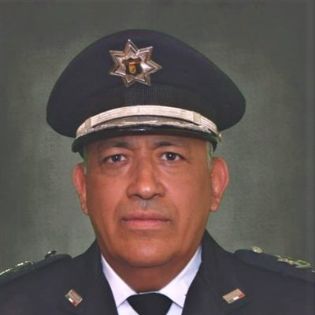
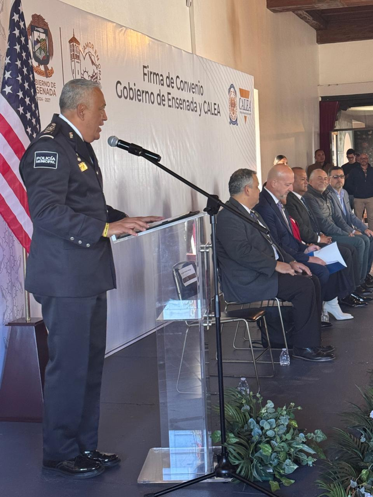
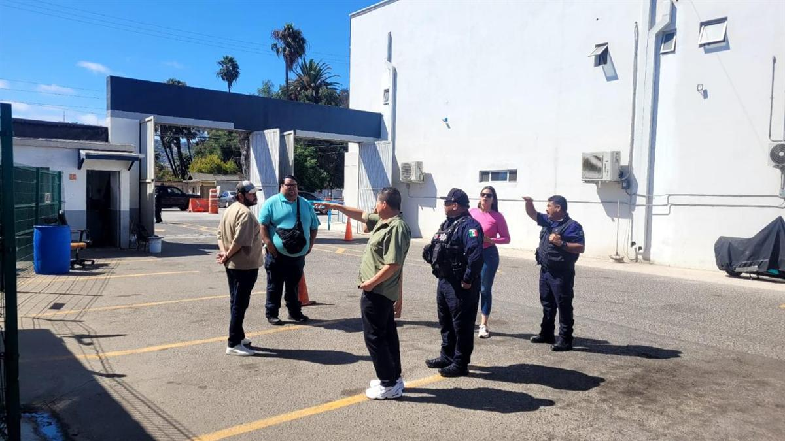
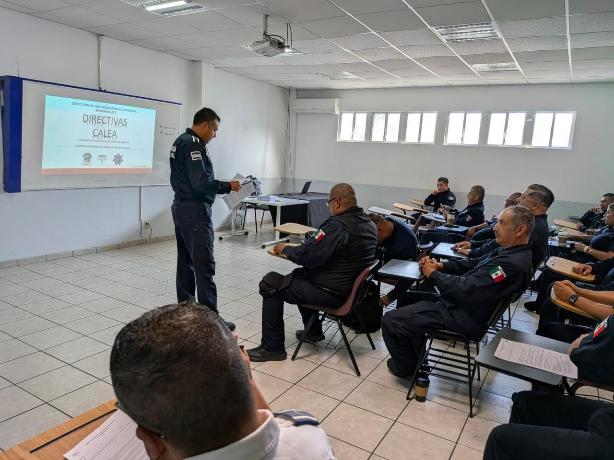
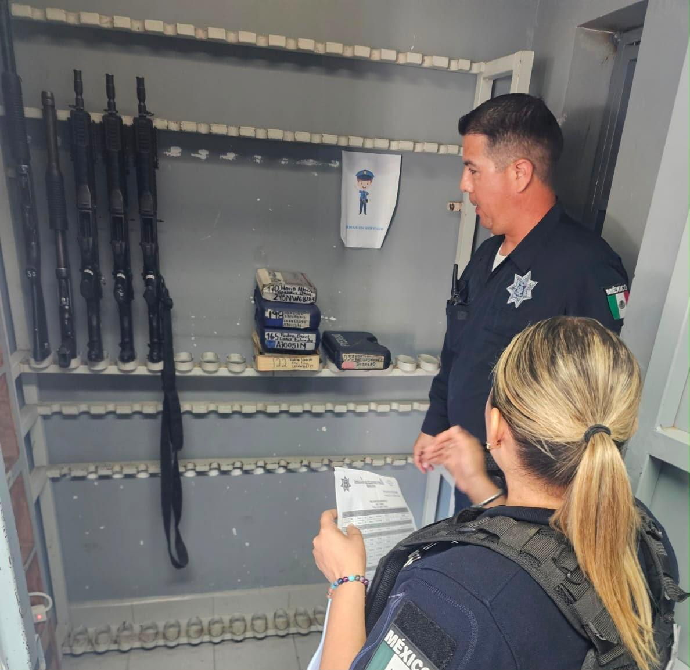
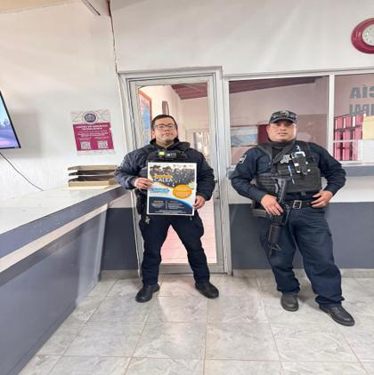

Formalización de procedimientos
Directivas escritas y estandarizadas para cada proceso operativo y administrativo, que reducen la discrecionalidad y aseguran consistencia en el servicio.
Un compromiso institucional con la excelencia operativa, la transparencia y la profesionalización policial, conforme a los estándares de la Comisión de Acreditación para las Agencias de Aplicación de la Ley.
Para efectos del proceso de acreditación CALEA, la Agencia es la Dirección de Seguridad Pública Municipal de Ensenada, Baja California: la institución municipal responsable de ejercer las funciones de seguridad pública que le corresponden dentro del ámbito de competencia municipal, con apego al marco jurídico aplicable.
La Dirección de Seguridad Pública Municipal de Ensenada se compromete a salvaguardar la integridad física y patrimonial de los habitantes del municipio, asegurando el orden público mediante la aplicación efectiva de la ley. Para ello, se enfoca en la prevención del delito, la pronta respuesta a emergencias y la colaboración estrecha con la ciudadanía, fomentando la confianza y participación comunitaria en las labores de seguridad.
Aspiramos a consolidarnos como una institución policial ejemplar, caracterizada por su profesionalismo, transparencia y proximidad con la comunidad. Buscamos implementar tecnologías avanzadas y programas de capacitación continua para nuestro personal, con el objetivo de ofrecer servicios de seguridad de alta calidad que respondan eficazmente a las necesidades y expectativas de la sociedad ensenadense.
La Dirección de Seguridad Pública Municipal cuenta con áreas operativas, administrativas, jurídicas, de prevención, profesionalización y especializadas que trabajan coordinadamente para brindar servicios de seguridad pública a la población del municipio de Ensenada.
Toca una subdirección o coordinación para ver sus departamentos y unidades.

DirectorCALEA — la Comisión de Acreditación para las Agencias de Aplicación de la Ley (Commission on Accreditation for Law Enforcement Agencies) — es el organismo internacional de mayor reconocimiento en la certificación de corporaciones policiales.
Fundada en 1979 en Estados Unidos, desarrolla y administra un cuerpo de estándares de mejores prácticas que cubren desde el uso de la fuerza y las operaciones policiales hasta la administración, el desarrollo de personal y el servicio a la comunidad. Obtener la acreditación significa que una agencia ha demostrado, ante evaluadores externos independientes, el cumplimiento voluntario de estos estándares de excelencia.
Fundada en 1979 por cuatro asociaciones policiales líderes en Estados Unidos: IACP, NOBLE, NSA y PERF.
190 estándares que abarcan la organización, las operaciones y el servicio policial.
Verificación independiente mediante auditorías documentales y visitas in situ de evaluadores certificados.
Cinco razones que impulsan a la DSPM Ensenada a alinearse con el estándar internacional de excelencia policial.
Directivas escritas y estandarizadas para cada proceso operativo y administrativo, que reducen la discrecionalidad y aseguran consistencia en el servicio.
Alineación de las prácticas policiales con el marco jurídico nacional e internacional y con los estándares de derechos humanos.
Protocolos comunes que facilitan la coordinación con otras corporaciones acreditadas a nivel estatal, nacional e internacional.
Transparencia y rendición de cuentas verificadas externamente, que fortalecen la relación entre la corporación y la comunidad.
Capacitación continua y estándares objetivos de desempeño que elevan la calidad profesional de cada elemento.
Un recorrido de varios años, desde la firma del convenio hasta la evaluación formal de CALEA, con la participación de todas las áreas de la corporación.
Se formaliza el compromiso institucional de la DSPM Ensenada con el proceso de acreditación ante CALEA, marcando el inicio oficial de los trabajos hacia la mejora continua y la profesionalización policial.

El equipo de acreditación inicia la capacitación en la plataforma oficial de CALEA para la gestión documental, el control de políticas y la presentación de evidencias.
Se identifican las diferencias entre las políticas y prácticas actuales de la DSPM y los requisitos de CALEA, definiendo el punto de partida y la estrategia institucional.
Participación en Garden Grove, California, fortaleciendo la vinculación con agencias acreditadas y actualizando al equipo en los procesos de evaluación y cumplimiento.
Distribución y capacitación al personal operativo y administrativo, fomentando la participación en la elaboración de directivas internas alineadas a los 190 estándares.
Capacitaciones y revisiones orientadas a la actualización de procedimientos, consolidando una cultura organizacional basada en evidencia y mejora continua.

Se reúnen informes, registros de capacitación y pruebas de infraestructura. La corporación alcanza el 92% de directivas escritas.
Comienzan los mock audits con auditores externos de organizaciones acreditadas por CALEA en las delegaciones de la zona sur y oriente.
Continúan los mock audits en las estaciones de policía, junto con la homologación de formatos, modificaciones de infraestructura y capacitación reforzada al personal.
Organización y sistematización de la documentación que acredita el cumplimiento de las 190 directivas, respaldada en la plataforma para revisión externa.
Los evaluadores externos verifican el grado de cumplimiento de las directivas, las pruebas de apego a protocolos y las condiciones físicas y operativas, como diagnóstico previo a la auditoría formal.
Seguimiento al cumplimiento de estándares, integración de evidencias, evaluación de procedimientos, acciones de mejora y preparación institucional para las evaluaciones correspondientes.
Continuación de las etapas de evaluación establecidas por CALEA y seguimiento del proceso para alcanzar la acreditación, sujeto al cumplimiento de los requisitos correspondientes.
Una vez obtenida, la acreditación tiene una vigencia de cuatro años, durante los cuales la corporación mantiene un cumplimiento continuo y se somete a evaluaciones anuales bajo estándares internacionales de calidad, transparencia y profesionalismo.
La Gerencia de Acreditación coordina la implementación, seguimiento y documentación de los estándares CALEA, trabajando de manera conjunta con las diferentes áreas de la Dirección para fortalecer los procesos institucionales y mantener una cultura permanente de mejora continua.
Documentos normativos de la Dirección de Seguridad Pública Municipal de Ensenada, Baja California, México, organizados por capítulo y actualizados conforme a los 190 estándares de CALEA.
Una directiva es un documento institucional escrito que establece políticas, disposiciones, procedimientos, responsabilidades o lineamientos que regulan la actuación de la corporación y de su personal. Las directivas permiten establecer criterios uniformes de actuación y constituyen uno de los principales instrumentos mediante los cuales la DSPM Ensenada implementa los estándares del proceso de acreditación CALEA. Su cumplimiento es responsabilidad del personal al que resulte aplicable.
Autoridad, mando y el sistema de directivas escritas de la corporación.
8 documentosÉtica, estructura organizacional, personal y gestión de recursos.
18 documentosProcedimientos disciplinarios, quejas y asuntos internos.
10 documentosUso de la fuerza, detenciones, custodia y respuesta a incidentes.
38 documentosAnálisis táctico, investigación preventiva y sistemas de información policial.
37 documentosReclutamiento, capacitación, evaluación y desarrollo del personal.
26 documentosAtención a niñas, niños y adolescentes en conflicto con la ley.
4 documentosVialidad, control del tránsito vehicular y apoyo carretero.
12 documentosEstándares CALEA identificados como no aplicables a la corporación.
37 documentosRelación con medios de comunicación y difusión institucional.
1 documentoLa Dirección de Seguridad Pública Municipal reconoce la importancia de escuchar al personal adscrito como parte del fortalecimiento permanente de sus servicios.
El personal de la DSPM podrá consultar en este apartado los mecanismos institucionales correspondientes para presentar quejas, reconocimientos, comentarios o sugerencias relacionados con la actuación y los servicios proporcionados por el personal de la Dirección.
Escanea con tu móvil
Danos a conocer tus comentarios, sugerencias, quejas o felicitaciones
La DSPM Ensenada mantiene un proceso permanente de revisión y fortalecimiento institucional. En esta sección se publican periódicamente las acciones más recientes.

Sesión de capacitación institucional para dar a conocer las directivas alineadas a los estándares CALEA.

Revisión de instalaciones y equipo como parte de los ejercicios de preparación previos a la evaluación formal.

Actividades de difusión interna para dar a conocer el proceso de acreditación entre el personal de la corporación.
¿Dudas sobre el proceso de acreditación? Ponte en contacto con el equipo responsable.
Calle Novena No. 1300, Col. Obrera, C.P. 22830, Ensenada, Baja California
Lunes a viernes, 8:00 a 15:00 h
Cuestionario interno de práctica para que el personal repase conceptos generales del proceso de acreditación CALEA. Uso exclusivo del personal de la corporación.
Comenzar autoevaluaciónLa acreditación CALEA representa el compromiso de la Dirección de Seguridad Pública Municipal de Ensenada con la profesionalización, la mejora continua y la prestación de un servicio policial de calidad para nuestra comunidad.